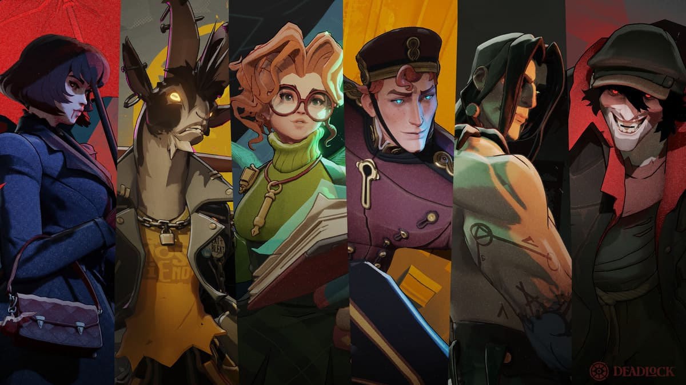
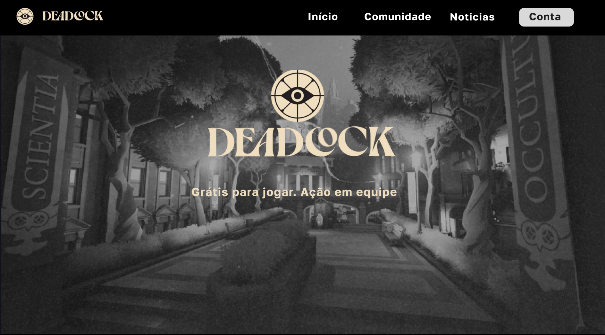
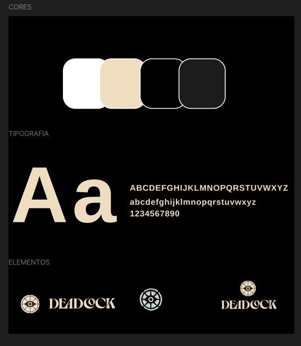
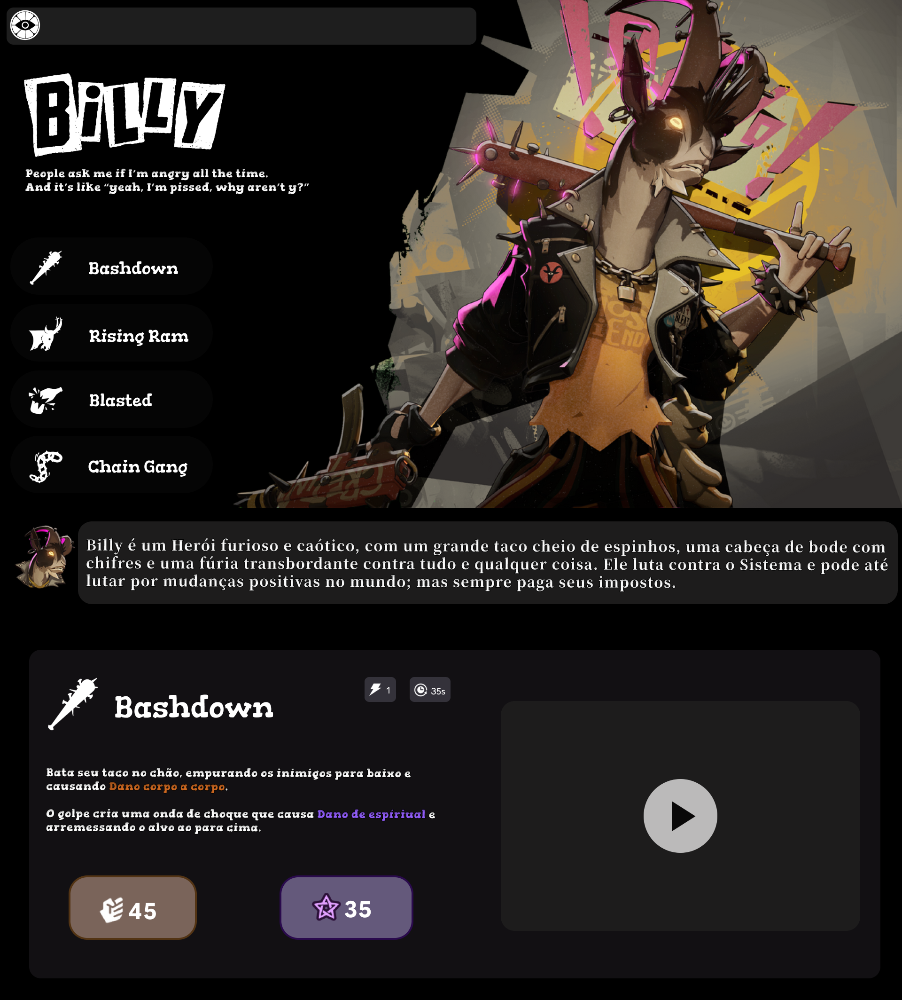
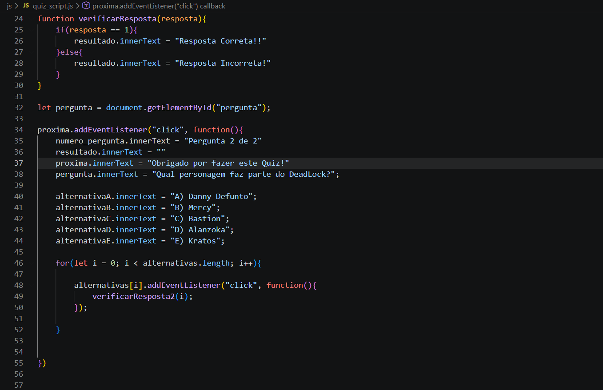
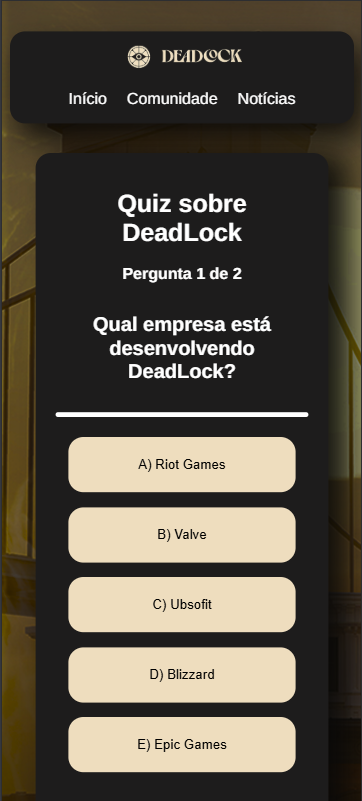
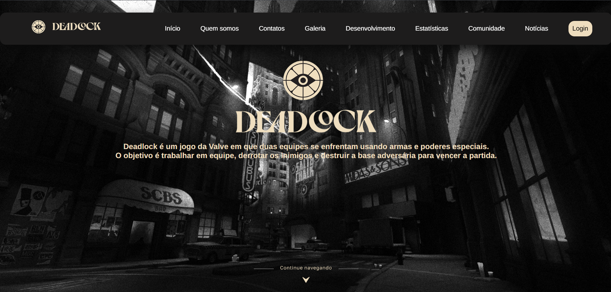

Desenvolvimento do Projeto
A ideia
A ideia inicial do projeto surgiu a partir do interesse dos integrantes por jogos eletrônicos. Inicialmente, foi considerada a possibilidade de desenvolver o site com o tema de Overwatch, jogo que os integrantes já conheciam e jogavam juntos. Durante a definição do tema, surgiu a possibilidade de utilizar Deadlock, apresentado por um dos integrantes ao outro. Após conhecer e experimentar o jogo, ambos demonstraram interesse pelo título, levando à decisão de utilizá-lo como tema principal do projeto.

Planejamento
Após a definição de Deadlock como tema principal, iniciou-se a etapa de planejamento do projeto. Nessa etapa, foram definidas as páginas que fariam parte do site, bem como os conteúdos que seriam apresentados em cada uma delas. Também foram planejados os elementos de navegação, a organização das informações e os recursos que seriam utilizados para tornar o site mais completo e interativo. Além disso, foram considerados os requisitos do projeto, como a utilização de HTML, CSS, JavaScript, tabelas, formulários, elementos multimídia e responsividade. Dessa forma, o planejamento permitiu estabelecer a estrutura inicial do site e orientar as etapas seguintes do desenvolvimento.

Identidade Visual
Após o planejamento da estrutura do projeto, foi definida a identidade visual que seria utilizada no desenvolvimento do site. Para isso, foram escolhidas cores, fontes, imagens e elementos gráficos que pudessem representar a estética e a temática de Deadlock. A escolha dos elementos visuais buscou manter uma identidade consistente entre as diferentes páginas, utilizando principalmente tons escuros e detalhes em tons claros para criar contraste e destacar as informações. Também foram selecionadas imagens relacionadas ao jogo e definidos padrões para a organização dos elementos, contribuindo para uma apresentação visual mais organizada e coerente com a proposta do projeto.

Desenvolvimento
Após a definição do planejamento e da identidade visual, iniciou-se a etapa de desenvolvimento do site. Nessa fase, foram construídas as páginas utilizando HTML para estruturar os conteúdos, CSS para definir a aparência e a organização dos elementos e JavaScript para implementar os recursos de interatividade. Durante o desenvolvimento, foram aplicados os conhecimentos trabalhados ao longo do projeto, buscando manter uma estrutura organizada e uma navegação funcional entre as páginas.
Também foram implementados diferentes componentes e recursos previstos no planejamento, como menus de navegação, tabelas, formulários, elementos multimídia e páginas com diferentes propostas de apresentação. A construção foi realizada de forma gradual, permitindo testar e ajustar os elementos conforme o projeto avançava e garantindo que as páginas mantivessem uma identidade visual consistente.

Interatividade
Após a construção das principais páginas, foram implementados os recursos de interatividade do site, com o objetivo de tornar a navegação mais dinâmica e proporcionar uma maior participação do usuário. Para isso, foram utilizados recursos de JavaScript para trabalhar com eventos e manipulação dos elementos da página, permitindo que determinadas ações realizadas pelo usuário gerassem respostas e alterações no conteúdo.
Entre os recursos desenvolvidos, destaca-se o quiz sobre Deadlock, no qual o usuário pode selecionar alternativas e receber uma indicação sobre a resposta escolhida, além de avançar entre as perguntas. Também foi utilizado o LocalStorage para armazenar informações inseridas pelo usuário, permitindo que determinados dados permaneçam disponíveis mesmo após o recarregamento da página. Dessa forma, os recursos implementados contribuíram para tornar o site mais funcional e interativo, indo além de uma apresentação apenas estática de informações.

Responsividade
Durante o desenvolvimento do projeto, também foi considerada a necessidade de adaptar o site para diferentes tamanhos de tela. Para isso, foram utilizadas técnicas de responsividade com CSS, ajustando tamanhos, espaçamentos, posições e organização dos elementos conforme a largura disponível. Foram desenvolvidas adaptações principalmente para telas de computador e dispositivos móveis, garantindo que os conteúdos permanecessem organizados e acessíveis em diferentes resoluções.

Resultado Final
Ao final do desenvolvimento, foi obtido um site completo sobre Deadlock, reunindo as características e conteúdos definidos durante as etapas de planejamento. O projeto apresenta uma identidade visual consistente, diferentes páginas de conteúdo, recursos de interatividade e adaptações para diferentes tamanhos de tela. Dessa forma, o resultado final reúne os conhecimentos aplicados durante o desenvolvimento e atende aos principais requisitos estabelecidos para o projeto, proporcionando uma experiência organizada e funcional ao usuário.
